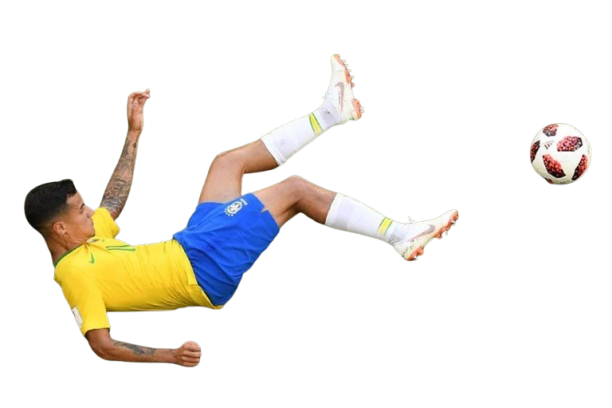

Philippe Coutinho é um talentoso meio-campista brasileiro conhecido por sua criatividade e chutes de longa distância. Revelado pelo Vasco da Gama, brilhou na Europa por clubes como Liverpool e Barcelona. Teve passagens marcantes também pela seleção brasileira. Sua habilidade técnica e visão de jogo o tornam um jogador diferenciado.
